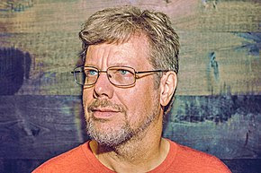

Guido Van Rosum
The who developed python programming language

Here is life and career journey of Guido Van Rossum
- place of birth:Van Rossum was born and raised in the Netherlands.
- Education:He received a master's degree in mathematics and computer science from the University of Amsterdam in 1982.
- Work:He has worked for various research institutes, including the Centrum Wiskunde & Informatica (CWI) in the Netherlands, the U.S. National Institute of Standards and Technology (NIST), and the Corporation for National Research Initiatives (CNRI). From 2000 until 2003 he worked for Zope corporation. In 2003 Van Rossum left Zope for Elemental Security. While there he worked on a custom programming language for the organization. From 2005 to December 2012, he worked at Google, where he spent half of his time developing the Python language. In January 2013, he started working for Dropbox. In October 2019 Van Rossum officially retired.
- About Python:In December 1989, Van Rossum had been looking for a "'hobby' programming project that would keep [him] occupied during the week around Christmas" as his office was closed when he decided to write an interpreter for a "new scripting language [he] had been thinking about lately: a descendant of ABC that would appeal to Unix/C hackers". He attributes choosing the name "Python" to "being in a slightly irreverent mood (and a big fan of Monty Python's Flying Circus)". He has explained that Python's predecessor, ABC, was inspired by SETL, noting that ABC co-developer Lambert Meertens had "spent a year with the SETL group at NYU before coming up with the final ABC design". In July 2018, Van Rossum announced that he would be stepping down from the position of BDFL of the Python programming language. Growing up: Guido van Rossum was born on January 31, 1956, in Haarlem, the Netherlands. He was the eldest child of his parents. He has a younger brother named Just van Rossum. He also has a younger sister. His father was an architect, and his mother trained as a schoolteacher but left her job after marriage. His parents belonged to the left-leaning ‘Pacifist’ and ‘Labor’ parties. The "van" in Guido’s name, according to Dutch naming conventions, is capitalized when the person is called by the surname only and not when one uses his full name. This fact also finds mention in Guido’s home page. He received an electronics kit, probably on his tenth birthday, and eventually became an electronics hobbyist while in high school. He was good at designing circuits rather than at soldering and gradually started designing more complicated digital circuits, which became his main hobby. He also had an interest in building mechanical models. He attended the ‘University of Amsterdam,’ from where he obtained a master's degree in mathematics and computer science in 1982